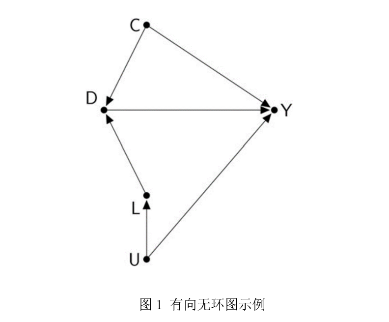
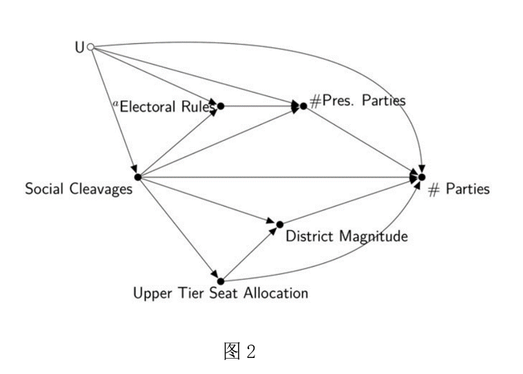
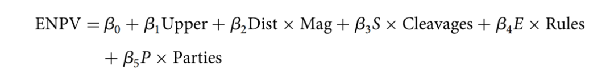

收录于合集
文献来源： Luke Keele, Randolph T. Stevenson and Felix Elwert, “The causal interpretation of estimated associations in regression models”. Political Science Research and Methods , 2020.8.1-13
作者简介： Luke Keele，现任宾夕法尼亚大学副教授；Randolph T. Stevenson，莱斯大学政治学系教授；Felix Elwert,威斯康星大学麦迪逊分校社会学系Romnes教授。
统计模型在政治科学研究中非常普遍，研究者使用各种模型来描述现象、做出预测以及进行因果推断。过往的因果推断方法往往是线性或广义线性模型，而近期一些新的方法，例如匹配、逆概率加权以及非参数和半参数估计等也被用于因果推断领域。这些方法大体上可以归为两类：干扰参数法(nuisance parameter approaches)和多参数法(multi-parameter approaches)。前者包括政治科学常用的匹配法和流行病学领域常用的逆概率加权法；后者包括对解释变量进行建模的统计方法。干扰参数法只关注处理变量的处理效应(treatment effect)，而多参数法则关注所有解释变量的协方差系数并提供解释。
政治科学研究者会提出一些竞争性假设，然后建立模型来估计因果效应以做出判断。在统计模型中，有些变量虽然并非研究所感兴趣和关注的，但是在因果识别的过程中却非常重要，这些变量被称为控制变量(control variable)。但是这些研究者往往需要为控制变量提供一个因果解释，因为根据理论和既有的研究，在控制变量对结果变量的因果效应上，研究者们会有一个预期。如果这些预期正常发生，他们会将其写入研究结果中作为额外的实证证据，这对模型设定来说具有积极意义；但是如果出现异常状况，研究者就需要在讨论部分解释这些异常，甚至是对模型设定提出质疑。
本文作者认为，有些控制变量的协方差系数是不可解释的，研究者需要避免解释这些统计量。作者使用因果图(causal graphs)来说明回归模型中什么样的系数需要提供因果解释，并且探索为这些系数提供解释的条件。
统计估计的因果解释
从直觉上看，如果某一变量D的变化伴随着变量Y的变化，那这种关系似乎就是因果关系。问题在于，这种共变的关系没有考虑到混杂因子和选择性偏误的影响，这些因素可能导致所谓的虚假相关。此外，共变关系是没有方向性的，而因果关系具有方向性。也即此案例中，可能是因为变量Y的变化而导致D的变化，并非是D对Y的因果影响。所以如果要识别D对Y的因果效应，需要采取策略以建立D对Y的潜在值的独立性。这种识别策略也为判断是否需要对所估计的参数进行因果解释提供了基础。
首先，对估计量的因果解释需要基于因果假设。其次，尽管因果图可以帮助判断，但是不使用因果图的情况下，我们也可以通过潜在结果的框架来理解，只不过因果图能够更清晰明确地将需要判断的关系展现出来。作为一种非参数识别策略，因果图可以在假设某些因果效应缺失的情况下而具有马尔科夫性(Markovian)和非环性(acyclic)。
有向无环图(DAG, directed acyclic graph)包括带标签的结(node)，代表不同的变量；这些结通过“桥” (edges)连接起来，这些“桥”代表假定的定性因果结构。如图1所示，D→Y表示D变量（或变量集）对Y的直接因果效应；U、C、L是D的父节点；Y也是D的一个子节点。有向无环图表示没有节点能够影响自身，且不包括独立的误差项。有向无环图能够展示三种效应：直接效应、间接效应和总效应。例如，图一中从C到Y的箭头代表C对Y的直接效应；C通过其他节点到Y的路径表示C对Y的间接效应；所有连接C与Y的路径总和表示C对Y的总效应。

对有向无环图的识别基于d-分割的性质，这决定了两个变量是否具有因果关系。当两个变量在有向无环图是d- 分割的，那么这两个变量在统计上相互独立，反之则在统计上相关。两个变量在三种情况下是d- 连接状态：1、一个变量是另一个变量的直接原因（如D→Y）；2、如果两个变量有一个共同的原因（如L←U→Y中的L和Y）；3、当碰撞点(collider)被控制（如L→D←C中的L和C），L和C是d- 分割的，但是如果D被控制，那么L和C则产生了d-连接关系。
有向无环图的一个前提假设的完备性(completeness)，所有的变量都被纳入图中，包括那些未观测到的变量。这一假设满足后，所有解释变量和结果变量的后门路径(back- door path，即存在混杂因子的情况)都被关闭，则因果效应能被正确识别，这些因果效应被称为前门路径(front-door path)。后门准则能够帮助识别因果效应，即使是多处理变量的联合因果效应（也就是因果交互效应）也是适用的。
案例：有效政党的数量
在比较政治中，一部分选举制度研究的文献关注政党数量对支持选举的影响。自迪韦尔热以来，研究者关心什么样的选举制度结构能够产生一定数量的有效政党，这一论断最著名的是“迪韦尔热定律”。关于这部分文献可以使用如下的有向无环图来表示。

作者使用该图来表示既有文献中论述的可能存在的因果结构（作者宣称这个图并不能包括全部文献中所研究的变量）。这个图中包括了一些关键的变量，例如选举规则，社会分裂以及选区规模等，还包括未观测到的影响因素集合U（比如政党演说策略）。假定某个研究者对其中某个因果总效应进行回归建模（假定是选区规模对有效政党数量的影响），他就需要控制有向无环图中的所有其他变量。在图中，选区规模与政党数量之间除直接效应之外还有很多后门路径，因此需要对图中的一些变量进行控制。如果使用线性模型来进行估计的话，模型如下：

其中，β2代表选区规模的总效应，其他参数没有任何我们感兴趣的因果效应。从图中可以看出，许多后门路径使得某些参数估计没有因果解释的意义，因此，在使用有向无环图后，我们可以发现许多回归模型在应用过程中进行因果解释的风险。
结论
在对一些文献进行整理的基础上，作者对因果结构的展现和因果效应的解释提出如下三点意见：
1.谨慎选择因果识别策略；
2.每一个感兴趣的处理效应都需要单独地进行识别；
3.应该避免对任意控制变量的因果效应进行解释。
后记
本文提供了两个案例来展示有向无环图的应用，由于逻辑类似，故只编译其中一个。
推荐阅读：
[美]朱迪亚·珀尔，[美]达纳.麦肯齐著：《为什么：关于因果关系的新科学》，江生、于华译，北京：中信出版社2019年版。
编译：刘天祥 审校：陆屹洲 编辑：康张城
【政文观止Poliview】系头条号签约作者